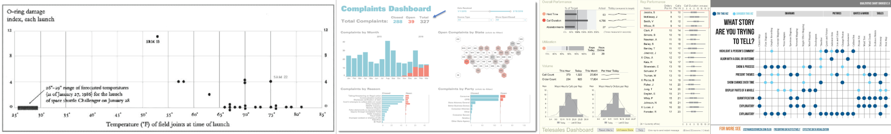
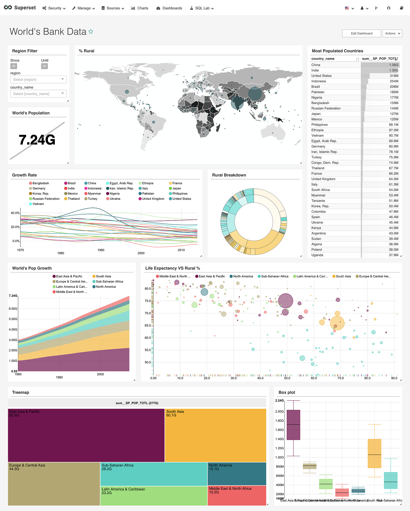

There are dozens of books and workshops and online tutorials teaching you how to make good data visualization. But what is good data visualization? You probably think it’s fast — charts that are quickly understood or charts that are quickly made or (preferably) both. That’s because most everything that teaches you data visualization, whether it’s a technical approach like my book or one that focuses more on design and technique, is focused on teaching you how to make data visualization quickly and how to make data visualization that can be quickly understood.

Our modern approach to data visualization is focused on quickly making data visualization. I think that focus creates an incomplete understanding of data visualization and damages our ability to use and make data visualization.
The traditional data visualization trope is a report for busy executives created by subject experts
Visual communication, like all forms of communication, does not happen in just one mode. The traditional data visualization trope is a report for busy executives created by subject experts. This classic case goes back to Tufte’s analysis of a meeting where NASA needs to decide, right now, whether to launch the Challenger in cold weather. But along with this mode there are long form data visualization products and analytical applications that demand time and investment. I work them all the time at Netflix and you can experience them in various media outlets like Pudding or The New York Times. This mismatch between the actual modes of data visualization and the best practices in data visualization slows development of more advanced forms but also implies to readers that any data visualization that is not immediately understood is a failure.
The focus on fast data visualization affects how we design data visualization products, what tools we use to create them, the role of the data visualization creator in relation to their product, and how we envision engaging with data visualization readers. And this vision sells because it implies a no nonsense, “show me the data” attitude that aligns with organizational leadership that would prefer to see intimidating advanced charting methods as needlessly complex.
As a result, fast data visualization dominates the professional literature. If we were to only understand data visualization through the best-selling manuals and tools built for data visualization, it would seem that it is governed by an almost desperate rush.
On one side are techniques to make your data visualization as easily and quickly comprehensible as possible. The language and lessons around this approach are dominated by a discourse of restraint: Restrained color choices, restrained decorative choices, restrained interactivity and restrained chart types.
On the other side are tools to make data visualization products advertising just how quickly and easily you’ll be able to make charts. Tableau tutorials brag about getting your dashboard built in 10 minutes (or even one minute). There’s even an Iron Chef-like competition Tableau holds called Iron Viz. Tools like Superset plug into your data and give you immediate insights automatically. You can’t get much faster than immediate.

This breakneck pace is a real data visualization constraint. It’s not a myth that charts are often deployed in rooms full of people who only have a short time to comprehend them (or not) and make a decision. Automatic views into datasources are a critical aspect of exploratory data analysis and health checks. The fast mode of data visualization is real and important, but when we let it become our only view into what data visualization is, we limit ourselves in planning for how to build, support and design data visualization. We limit not only data visualization creators but also data visualization readers.
In order to reveal a “slow” data visualization I want to examine charts more closely and think structurally about what charts say, what charts mean and what charts do. These two modes are not in opposition, rather all charts are capable of being slowed down with reflective analysis. This examination is broken down into three parts:
WHAT CHARTS SAY
WHAT CHARTS MEAN
WHAT CHARTS CAUSE (Coming 5/21)
This might all seem very academic or theoretical, needlessly complex or frivolous… like a network diagram. It’s not. Ultimately, data visualization is not a technical problem, it’s a design problem and, more than that, a communication problem. It’s about time we started thinking more deeply about it that way.